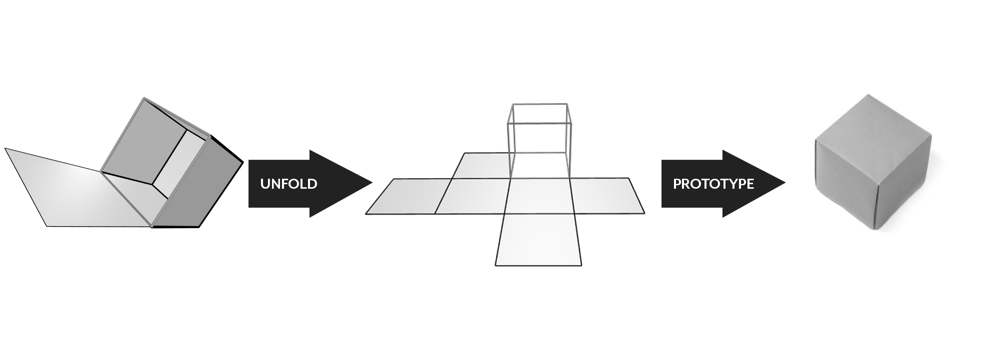
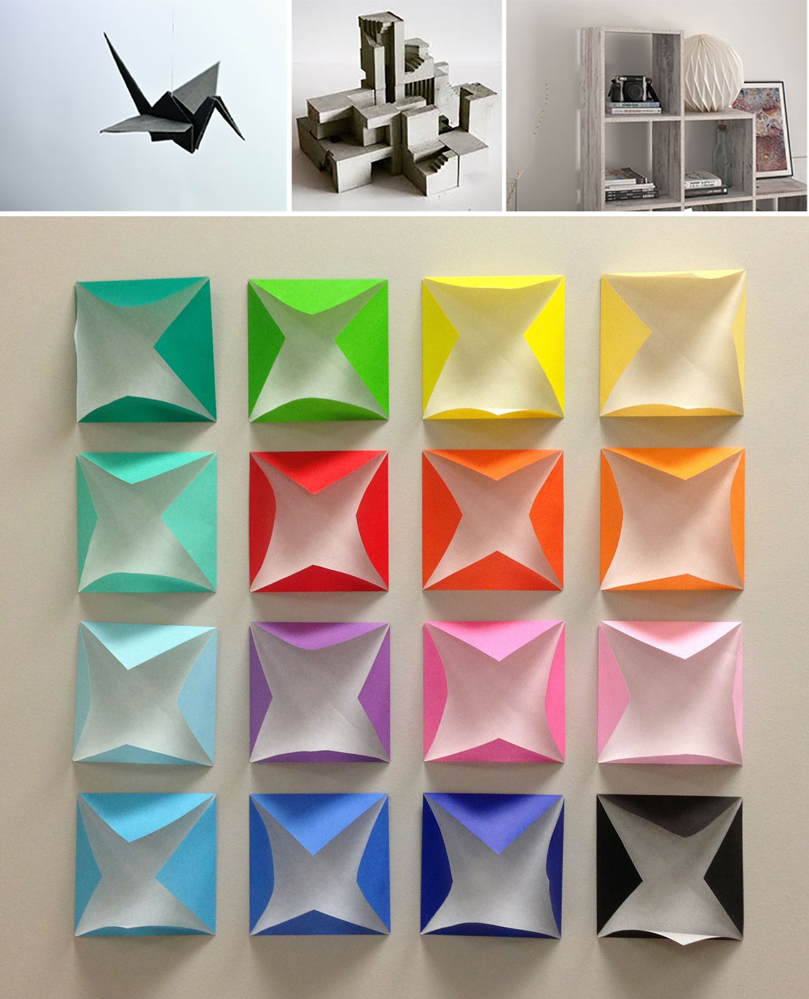

Architects and designers looking to prototype their ideas are amazed at how easy it is to use 3D Paper.
There is almost no learning curve!
Develop a blueprint of 3D model for your client in a few seconds:
Click three edges of the cube, and it will unfold.
3D Paper is a free program that creates blueprints for architects and designers. It unfolds your geometry and puts you in control of the process: upload your design, select the planes, and generate a blueprint in one click.
Unfold your 3D models into 2D blueprint in seconds, and start prototyping!
3D Paper prototypes don’t stop with architectural modeling: they can have many applications, from client demos to art shows. For example, if you are an interior designer, you can impress your clients with a beautiful 3D sculpture. It is similar to Origami, a popular art form originated in Japan, which has taken over the world. Unlock your inner artist and create beautiful origami designs!
(Mouse over the map to see details for each country)
Paper fold art is popular! Thanks to the Google trend, we can read the popularity and interest in paper fold artworks in the past few decades. This diagram shows the average google trend score relative to the population density for July 2005- July 2020.
What does it mean to you? Reach millions of potential clients with your designs, whether you are an architect, engineer, or interior designer.
Are you a teacher? Print these pre-made prototypes and engage your students with the exciting art of paper folding!
3D Paper is a free program that unfolds your geometry and puts you in control of the process: convert 3D model into 2D drawings in seconds! Upload your design and